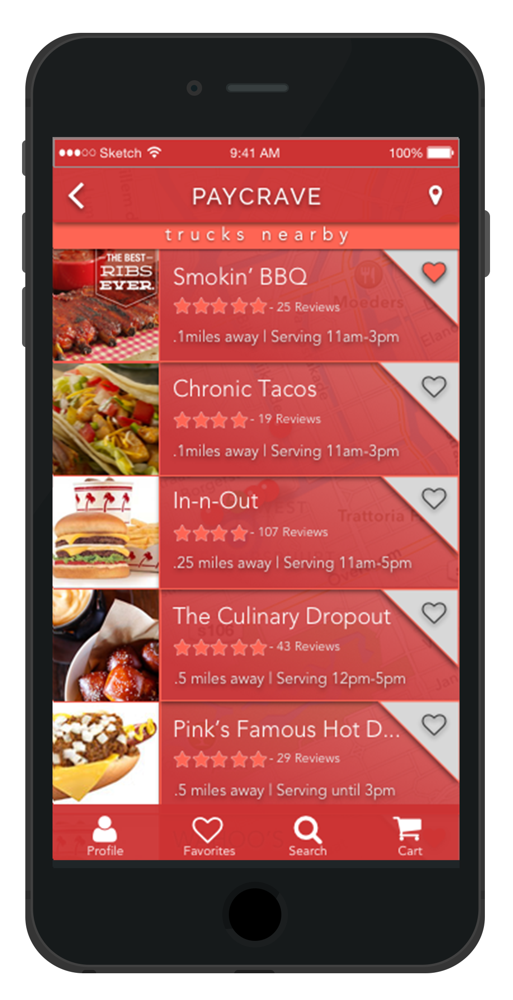

Competitive Analysis
Paycrave was my second project with BLOC, and was a period of significant growth for me in designing mobile apps. Prior to this I had completed a few less involved iOS and Android designs using Sketch, but for Paycrave I would design every aspect of the app, which required a lot more attention and detail.
Paycrave would be an iOS app that helps users find food trucks nearby, enables them to order, pay, view order history, and review trucks. There was no time for research on this one, so I jumped into the Competitve Analysis.
I began by running a search through the Apple App Store and found three competitors to analyze: Food Truck Finder USA, HNGR, and Roaming Hunger. Out of these three apps, the only one offering a service that Paycrave aimed to offer was HNGR, which was also the one with the most modern design, so I downloaded this app and tested it as much as it would let me. Below is a quick competitive analysis I put together.
Branding
After taking a good look at the competition I felt ready to start designing Paycrave. I began with a styleguide that BLOC provided, and I already had a logo in mind, so I put together a very simple idea in Illustrator and brought it to my mentor for his critique.
As you can see, I wasn't kidding when I said "simple." This logo passed the test of size, but still had room for improvement. After discussing how it could improve with my mentor, I knew what to do. Below is the final logo for Paycrave.

Wireframing
With the logo ready and the competitive analysis done, it was time to start wireframing with Balsamiq. Wireframing really helps me to start prioritizing things like what buttons really should be on the first page of the application, where certain buttons should be placed, and how large sections should be. I made a lot of adjustments from this phase, but this was the start of the design.
After discussing the wireframes with my mentor I had some ideas to strengthen the design, and I was excited to start implementing them in Sketch.
Hi-Fi Wireframing
When I started my Sketch designs for Paycrave, I knew that I had a very limited time to complete the project, and I ended up rushing through the designs. I learned that a good design does not come out of a rookie in a rush! I ended up re-designing almost every screen, and I think the improvement in the new designs really shines. The first re-designed screen was the list view that shows trucks near the user.

One important lesson I learned while designing Paycrave is that real estate is very limited with mobile designs, so a good mobile design doesn't waste space. The toggle switch for map and list view at the top, was wasting space, so I placed the pin symbol in the top right corner, which left enough space to include a screen title.
I really thought that I should have the menu available on this screen in my initial design, but my mentor looked at the design and pointed out that clicking on the heart icon looked like it could be difficult to do, and there could easily be an accidental click which could cause frustration for the user. I decided to remove the menu icon from this screen which allowed me to place the heart icon on the right side, eliminating the possibility of a negative user experience due to accidental clicks.
I won't bore you by going through each and every design change, but I'm sure you can see how all of the changes really improved the look and functionality of this screen.
Once a user selected a truck from the nearby list, the detail screen below would be displayed where the truck's menu, ratings, and additional images could be viewed. The first change that I'll point out is that I eliminated the Paycrave title from the top, as well as the information below the food truck's name. This resulted in a lot more space for me to improve the design. At the time a user reaches this screen they have already selected a truck, and are aware of it's operating hours, so you can probably guess what they're looking for...got it? Yes, a menu. That's why on the newer design I stuck the menu icon near the center of the page, and made it a button that spans the width of the screen. I think the new placement of this button alone would create a much better experience for the user.
Feeling the pressure of time, I started designing a very simple menu format for Paycrave which you can see below on the left. Without really looking at any other menus available on other apps, this was a pretty un-inspired design. I really didn't want to post this on my portfolio because I don't even want to look at it anymore! Thankfully, you can see a much stronger design of mine next to it, that came after some good pointers from my mentor and some time spent examining other apps.

When re-designing this menu I imagined using it to order food and immediately ran into some questions like, "What if I want to customize my order?", or "What if I change my mind and don't want an item that I selected?", and "What if I want multiple quanitites of one item?". After considering these things, I created a simple flow for ordering. You can see how "Fried Onion Bites" is selected above, which shows the quantity, that if tapped again will increase by 1. Once an item is selected the user then has 2 options appear which allow them to either customize the order, or remove it should they change their mind.
User Testing with inVision
After I had completed my designs, it was time to test them out and see if users could easily navigate through the app and accomplish the tasks it was designed for. I set up a clickable prototype in inVision, and made some phone calls to have my friends test it out. The results were positive, which was good, because I needed to get to my next project. Click here to access the usability test, and click here to access the prototype.